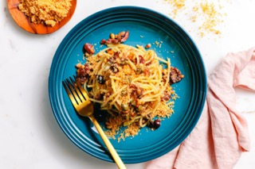

Spaghetti allo Scammaro

Spaghetti allo Scammaro comes from Naples and like many of the world's best recipes, this also has its origin in the "Cucina povera", i.e. in the poor people's kitchen.
The inventor is the Duke of Buonvicino, Ippolito Cavalcanti, who is said to have worked out the dish for fasting monks. This is even exactly evidenced by an entry from 1837 in his book "Cucina Teorico-Pratica".
The Neapolitan word "Scammaro" comes from the monks in the monasteries. During Lent, those who were sick and were allowed to eat meat ate their meals in their rooms - "Cammere" in dialect - so as not to disturb the other fasts. Thus, the word Cammerare = eating in her room became synonymous with eating meat-heavy meals. While "Scammerare" meant eating light vegetarian or fish-based meals outside the Mönchskammer and together with the others.
Ingredients
Preparation time 15 min
Working time 15 min
- 30 g pine nuts
- 4 tbsp olive oil
- 100 g breadcrumbs
- 200 g Spaghetti
- 2 cloves garlic
- 50 g Kalamata olive
- 40 g Sultanas
- 15-20 g Capers
- 2-3 sprigs parsley or basil
- salt
- Bring well-salted pasta water to a boil. Meanwhile, toast pine nuts in a pan without oil for 1-2 minutes. Remove from the pan and set aside
- Add 2 tablespoons of olive oil to the hot pan, toast breadcrumbs over medium heat while stirring for 2-3 minutes until golden brown. Remove from the pan and set aside. Add pasta to the boiling water
- Cut garlic into thin slices, core olives and chop coarsely
- Add the remaining oil to the pan, add sultanas, capers, olives and pine nuts and sauté for 1-2 minutes. Add about 150 ml of pasta water. Let it simmer on low heat
- Add pasta from the water directly to the pan about 2-3 minutes before the end of the cooking time. Mix and cook al dente over medium heat. Gradually add a little more of the pasta cooking water as needed
- If the pasta is al dente, increase the heat and add half of the roasted breadcrumbs. These still absorb some sauce, so do not add too little water
- Remove the pan from the heat and mix with half of the remaining breadcrumbs and some chopped basil or parsley. Arrange on a plate, top with extra breadcrumbs and some olive oil and serve immediately
Tips
The aroma of good Kalamata olives is decisive for this dish, black colored, inferior olives, on the other hand, unfortunately make the dish inedible.
Other recipes